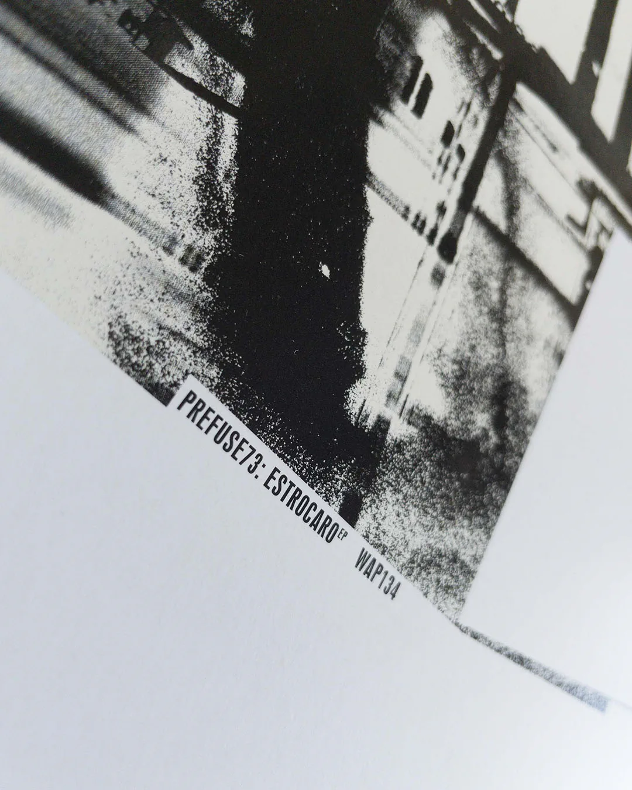
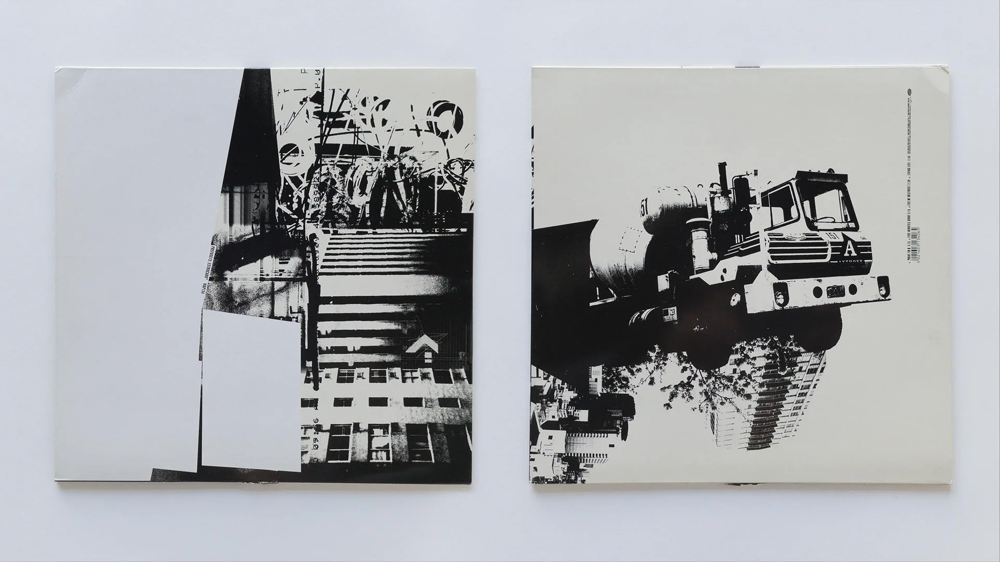
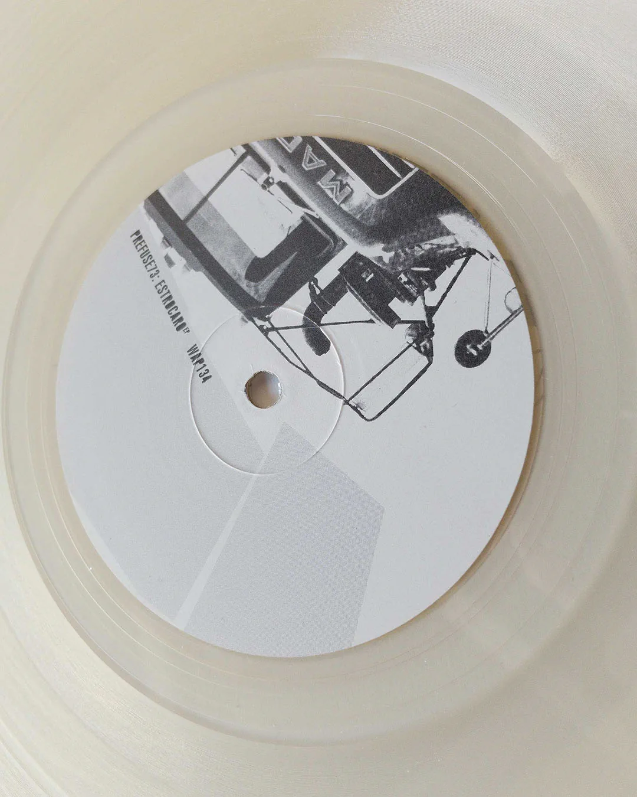
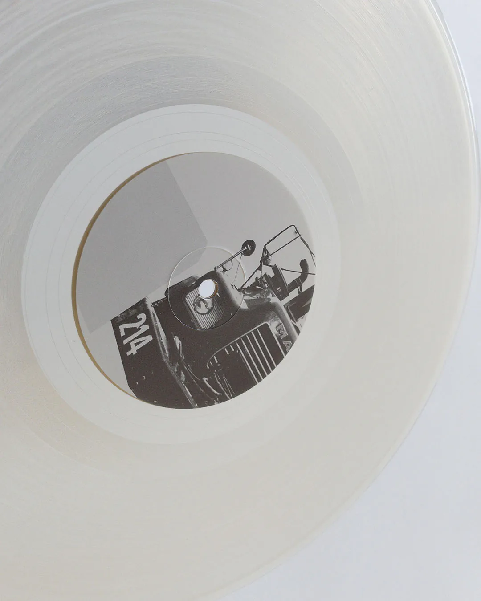

Prefuse 73 — Estrocaro EP
Prefuse 73 is the recording alias of producer Guillermo Scott Herren, whose fragmented samples, intricate rhythms, and electronic experimentation helped connect underground hip-hop with the emerging language of glitch-based music. His early recordings appeared on Warp Records, the influential British independent label known for adventurous electronic music and its visual culture.
Released by Warp Records in 2000, Estrocaro EP is an early Prefuse 73 recording, preceding his debut album Vocal Studies + Uprock Narratives. GRAPHIC HAVOC created the EP’s packaging design and photography for the clear-vinyl 12-inch release.
The sleeve pairs stark black-and-white photographs of urban structures and machinery with large areas of white space and understated typography. Cropping, high contrast, and layered textures create a fragmented visual composition, while photographic details continue onto the record’s center labels. The restrained treatment connects sleeve, typography, and vinyl as a unified physical object.



